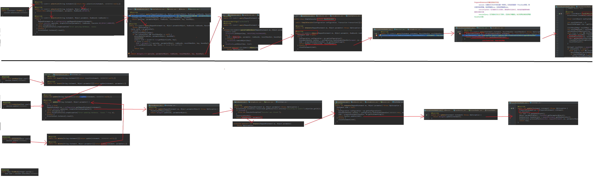
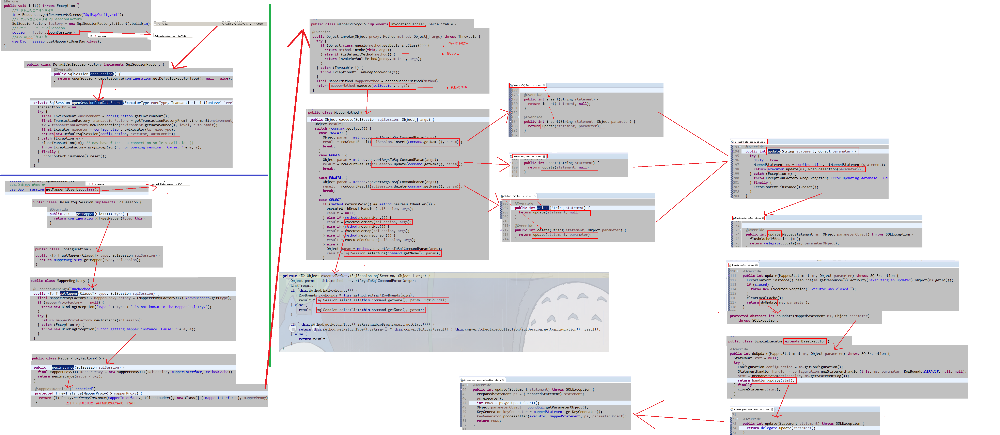
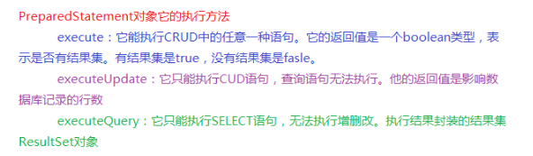
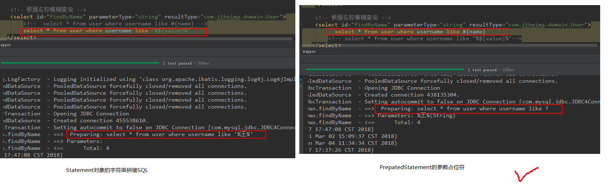

mybatis的基于代理Dao的CURD（Create.Update.Retrieve.Delete）操作
mybatis的参数和返回值的封装
mybatis的dao编写
两种方式：基于代理dao的实现和自定义dao实现类
自定义dao实现类的执行过程

基于代理dao的执行过程

从图中可以看出基于代理dao的方式，mybatis会自动生成selectList,selectOne、insert、update、delete方法
数据库操作
从图中可以看出insert、update、delete都是通过update方法实现的，而select、insert、update、delete方法在最后都是通过jdbc的PreparedStatement的execute方法实现的
PreparedStatement下execute、executeUpdate、executeQuery的区别

mybatis配置的细节
模糊查询两种方式
使用#{}占位符


使用${}拼接sql串


这两种方式的区别



几个标签的使用
properties标签
配置连接数据库的信息，有两种形式：
1.直接在文件中引入

2.引入外部文件，有两种方式
2.1使用resource属性

2.2使用url属性

配置properties 可以在标签内部配置连接数据库的信息，也可以通过属性引用外部配置文件信息 resource属性：用于指定配置文件的位置，是按照类路径的写法来写，并且必须存在于类路径下 url属性：要求按照Url的写法来写地址
URL:Uniform Resource Locator 统一资源定位符，它在全网唯一标识一个资源的位置
它的写法：
http://localhost:8080/mybatisserver/demo1Servlet
协议 主机 端口 URI
URI：Uniform Resource Identifier 统一资源标识符，它在应用中唯一定位一个资源
typeAliases标签 --解释Integer的用法

使用该标签进行别名处理的两种方式：

mappers标签的字标签：package

OGNL表达式
Obeject Graph Navigation Language
对象图导航语言
它通过对象的取值方法来获取数据，在写法上把get给省略了
比如：我们获取用户的名称
类中的写法：user.getUsername()
OGNL的写法：user.username
mybatis中为什么能直接写username，而不用user.呢？
因为在parameterType中已经提供了属性所属的类